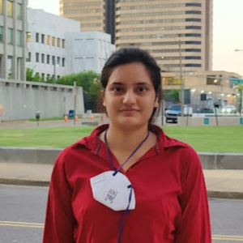
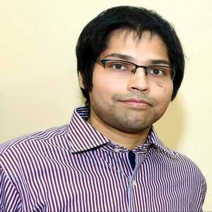
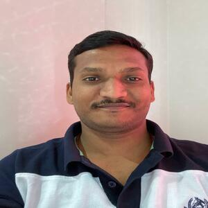

Rhythm Grover,
Assistant Professor
- Research interests: Efficient Algorithms for parameter estimation of signal processing models, Statistical properties of classical parameter estimation methods, Robust methods of parameter estimation in presence of outliers in the data.
- PhD, IIT Kanpur
- E-mail: rhythmgrover
 iitg.ac.in
iitg.ac.in
- Phone: +91-361-258-3503

Teena Sharma,
Assistant Professor
- Research interests: Artificial Intelligence, Machine Learning, and Deep Learning Algorithms for Image Enhancement, Object Recognition, and Biomedical Data Inequality.
- PhD, IIT Kanpur
- E-mail: teenaiitg.ac.in
- Phone: +91-361-258-3506
Amulya Kumar Mahto,
Assistant Professor
- Research interests: Statistical Modelling, Accelerated Life Testing, Competing Risks, Multicomponent Stress-Strength Reliability, Statistical Optimization, Classical and Bayesian Estimation.
- PhD, IIT Patna
- E-mail: akmahtoiitg.ac.in
- Phone: +91-361-258-3509
Arghyadip Roy,
Assistant Professor
- Research interests: Optimization and Control of Stochastic Systems, Reinforcement Learning, Markov Decision Process, Multi-armed Bandit, Stochastic Approximation, Resource Allocation in Communication Networks, Application of Reinforcement learning in Wireless Communication.
- PhD, IIT Bombay
- E-mail: arghyadipiitg.ac.in
- Phone: +91-361-258-3505

Chiranjib Sur,
Assistant Professor
- Research interests: Deep Learning, NLP/NLU, Recommendation Systems for Multimedia, Image/Video Captioning, Story Telling, Questioning Answering, Translation, Visual Questioning Answering, Statistical Learning, Image to Image Transformation, Segmentation and Organ detection, Object Detection, Scene Understanding, Multi-Frame Prediction, Scalable Big Data Technologies.
- PhD, University of Florida, US
- E-mail: chiranjibiitg.ac.in
- Phone: +91-361-258-3508
Debanga Raj Neog,
Assistant Professor
- Research interests: Machine learning and Deep Learning (Object tracking and localization, stereo reconstruction), Image Processing (Semantic segmentation, biomedical image processing), Computer Vision (Eye tracking, face tracking), Computer Graphics and AR/VR (Facial animation, anatomical augmented reality), Computational Imaging (High dynamic range imaging).
- PhD, Univ. British Columbia Vancouver, Canada
- E-mail: dneogiitg.ac.in
- Phone: +91-361-258-3504

Neeraj Kumar Sharma,
Assistant Professor
- Research interests: Bio-acoustics, health-acoustics, speech & audio; Brain-informed signal processing (behavioral and EEG data capture and analysis); AI for perception and cognition; Non-stationary time-series signal modelling (sampling and time-frequency analysis).
- PhD, IISc Bangalore
- E-mail: neerajsiitg.ac.in
- Phone: +91-361-258-3507

Prashant W. Patil,
Assistant Professor
- Research interests: Computer Vision, Deep Learning, Multi-weather Image/Video Restoration, Video Object Segmentation, Single Image Depth Estimation, Image/Video Super-resolution, Video Object Tracking, Activity Recognition.
- PhD, IIT Ropar
- E-mail: pwpatiliitg.ac.in
- Phone: +91-361-258-3510